vignettes/integration_introduction.Rmd
integration_introduction.RmdThis tutorial introduce how to use SRTpipeline (>=0.1.0) to analyze multiple spatially-resolved transcriptomics (SRT) data. We emphases how to use PRECAST model for spatial embedding, clustering and integration and its followed applications based on SRTProject object in the SRTpipeline package. This tutorial will cover the following tasks, which we believe will be common for many spatial analyses:
First, we load SRTpipeline.
library(SRTpipeline)
set.seed(2023) # set a random seed for reproducibilityFor this tutorial, we will introduce how to create a SRTProject object with multiple SRT samples using SRTpipeline that includes an introduction to common analytical workflows for multiple data batches. Here, we will be taking spatial transcriptomics dataset for mouse liver as an example. There are eight tissue slices with 450~700 spots and 8500~9500 genes that were sequenced on the ST platform. Our preprocessed data can be downloaded here, and the raw data can be found here.
Next, we download the data to the current working path for the followed analysis by the following command:
seuList <- readRDS("seuList_liver8.RDS")Then load to R.
n_sample <- length(seuList)
library(Seurat)
## create count matrix list: note each component has a name, i.e., `ID151672`.
cntList <- list()
## create spatial coordinate matrix
coordList <- list()
## create metadata list
metadataList <- list()
for (r in 1:n_sample) {
# r <- 1
message("r = ", r)
seu <- seuList[[r]]
sp_count <- seu@assays$RNA@counts
meta.data <- seu@meta.data
row.names(meta.data) <- colnames(sp_count)
cntList[[r]] <- sp_count
metadataList[[r]] <- meta.data
coordList[[r]] <- cbind(row = seu$row, col = seu$col)
}
names(cntList) <- paste0("Liver", 1:n_sample)
## create meta data for each data batches. Here we only have one data batch.
sampleMetadata <- data.frame(species = rep("Mouse", n_sample), tissues = rep("Liver", n_sample))
row.names(sampleMetadata) <- names(cntList)
## Name of this project
projectName <- "Liver8_PRECAST"We start creating SRTProject object. Filter out the genes less than 20 spots with nonzero read counts and the spots less than 20 genes with nonzero read counts.
SRTProj <- CreateSRTProject(cntList, coordList, projectName = projectName, metadataList, sampleMetadata,
min.spots = 20, min.genes = 20)
SRTProj## class: SRTProject
## outputPath: F:\Research paper\IntegrateDRcluster\AnalysisCode\SRTpipeline\vignettes\Liver8_PRECAST
## h5filePath: F:\Research paper\IntegrateDRcluster\AnalysisCode\SRTpipeline\vignettes\Liver8_PRECAST/Liver8_PRECAST.h5
## ---------Datasets basic information-----------------
## samples(8): Liver1 Liver2 ... Liver7 Liver8
## sampleColData names(3): species tissues NumOfSpots
## cellMetaData names(13): orig.ident nCount_RNA ... sample_id batch
## numberOfSpots(8): 675 684 ... 629 590
## ---------Downstream analyses information-----------------
## Low-dimensional embeddings(0):
## Inferred cluster labels: No
## Embedding for plotting(0):After removing unwanted cells and genes from the dataset, the next step is to normalize the data. To save RAM memory, normalized values are stored in disk as a h5file.
SRTProj <- normalizeSRT(SRTProj, normalization.method = "LogNormalize")We next select a subset of genes that exhibit high spot-to-spot variation in the dataset (i.e, they are highly expressed in some spots, and lowly expressed in others). It has been found that focusing on these genes in downstream analysis helps to highlight biological signal in single-cell datasets here.
Then we choose variable features. The default number of variable features is 2,000, and users can change it using argument nfeatures. The default type is highly variable genes (HVGs), but users can use spatially variable genes by seting type='SVGs', then method='SPARK-X' can be used to choose SVGs.
SRTProj <- selectVariableFeatures(SRTProj, nfeatures = 2000, type = "HVGs", method = "vst")
SRTProj## class: SRTProject
## outputPath: F:\Research paper\IntegrateDRcluster\AnalysisCode\SRTpipeline\vignettes\Liver8_PRECAST
## h5filePath: F:\Research paper\IntegrateDRcluster\AnalysisCode\SRTpipeline\vignettes\Liver8_PRECAST/Liver8_PRECAST.h5
## ---------Datasets basic information-----------------
## samples(8): Liver1 Liver2 ... Liver7 Liver8
## sampleColData names(3): species tissues NumOfSpots
## cellMetaData names(13): orig.ident nCount_RNA ... sample_id batch
## numberOfSpots(8): 675 684 ... 629 590
## ---------Downstream analyses information-----------------
## Variable features: 2000
## Low-dimensional embeddings(0):
## Inferred cluster labels: No
## Embedding for plotting(0):Calculate the adjcence matrix
## Obtain adjacency matrix
SRTProj <- AddAdj(SRTProj, platform = "ST")PRECAST model achieves joint dimension reduction, clustering and alignment by integration analysis for multiple samples. Some SRT clustering methods use Markov random field to model clusters of spots. These approaches work extremely well and are a standard practice in SRT data. PRECAST extracts the micro-environment related embeddings and aligned embeddings. The micro-environment related and aligned embeddings are saved in the slot reductions$microEnv.PRECAST and reductions$aligned.PRECAST, and the spatial clusters are saved in the slot clusters.
SRTProj <- Integrate_PRECAST(SRTProj, K = 6, q = 15)## fitting ...
##
|
| | 0%
|
|=================================== | 50%
|
|======================================================================| 100%
## variable initialize finish!
## predict Y and V!
## Finish ICM step!
## iter = 2, loglik= 5626857.500000, dloglik=1.002620
## predict Y and V!
## Finish ICM step!
## iter = 3, loglik= 5640561.500000, dloglik=0.002435
## predict Y and V!
## Finish ICM step!
## iter = 4, loglik= 5645114.000000, dloglik=0.000807
## predict Y and V!
## Finish ICM step!
## iter = 5, loglik= 5647727.500000, dloglik=0.000463
## predict Y and V!
## Finish ICM step!
## iter = 6, loglik= 5649604.500000, dloglik=0.000332
## predict Y and V!
## Finish ICM step!
## iter = 7, loglik= 5650967.000000, dloglik=0.000241
## predict Y and V!
## Finish ICM step!
## iter = 8, loglik= 5651987.500000, dloglik=0.000181
## predict Y and V!
## Finish ICM step!
## iter = 9, loglik= 5652801.000000, dloglik=0.000144
## predict Y and V!
## Finish ICM step!
## iter = 10, loglik= 5653475.500000, dloglik=0.000119
## predict Y and V!
## Finish ICM step!
## iter = 11, loglik= 5654053.500000, dloglik=0.000102
## predict Y and V!
## Finish ICM step!
## iter = 12, loglik= 5654559.500000, dloglik=0.000089
## predict Y and V!
## Finish ICM step!
## iter = 13, loglik= 5655020.000000, dloglik=0.000081
## predict Y and V!
## Finish ICM step!
## iter = 14, loglik= 5655472.000000, dloglik=0.000080
## predict Y and V!
## Finish ICM step!
## iter = 15, loglik= 5655906.000000, dloglik=0.000077
## predict Y and V!
## Finish ICM step!
## iter = 16, loglik= 5656316.000000, dloglik=0.000072
## predict Y and V!
## Finish ICM step!
## iter = 17, loglik= 5656694.500000, dloglik=0.000067
## predict Y and V!
## Finish ICM step!
## iter = 18, loglik= 5657029.000000, dloglik=0.000059
## predict Y and V!
## Finish ICM step!
## iter = 19, loglik= 5657320.000000, dloglik=0.000051
## predict Y and V!
## Finish ICM step!
## iter = 20, loglik= 5657571.000000, dloglik=0.000044
SRTProj## class: SRTProject
## outputPath: F:\Research paper\IntegrateDRcluster\AnalysisCode\SRTpipeline\vignettes\Liver8_PRECAST
## h5filePath: F:\Research paper\IntegrateDRcluster\AnalysisCode\SRTpipeline\vignettes\Liver8_PRECAST/Liver8_PRECAST.h5
## ---------Datasets basic information-----------------
## samples(8): Liver1 Liver2 ... Liver7 Liver8
## sampleColData names(3): species tissues NumOfSpots
## cellMetaData names(13): orig.ident nCount_RNA ... sample_id batch
## numberOfSpots(8): 675 684 ... 629 590
## ---------Downstream analyses information-----------------
## Variable features: 2000
## Low-dimensional embeddings(2): microEnv.PRECAST aligned.PRECAST
## Inferred cluster labels: Yes
## Embedding for plotting(0):To check the performance of integration, we visuzlize the inferred clusters and data batches on the two-dimensional tSNEs. First, we use AddTSNE() function to calculate the two-dimensional tSNEs based on the aligned.PRECAST embeddings.
SRTProj <- AddTSNE(SRTProj, n_comp = 2, reduction = "aligned.PRECAST")We visualized the inferred clusters and data batches. The tSNE plot showed the domain clusters were well segregated and data batches were well mixed.
cols_cluster <- chooseColors(n_colors = 6)
cols_batch <- chooseColors(palettes_name = "Light 13", n_colors = 8)
p_tsne2_cluster <- EmbedPlot(SRTProj, item = "cluster", plotEmbeddings = "tSNE", cols = cols_cluster,
legend.position = "right", pt_size = 0.2)
p_tsne2_batch <- EmbedPlot(SRTProj, item = "batch", plotEmbeddings = "tSNE", cols = cols_batch,
legend.position = "right", pt_size = 0.2)
drawFigs(list(p_tsne2_cluster, p_tsne2_batch), layout.dim = c(1, 2), legend.position = "right")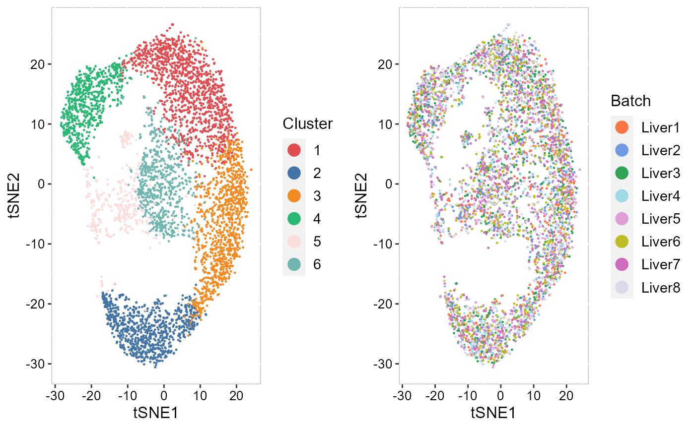
Except for the embedding plots, SRTpipeline also provides a variaty of visualization functions. First, we visualize the spatial distribution of cluster labels that shows the layer structure for all data batches.
## choose colors to function chooseColors
p12 <- EachClusterSpaHeatMap(SRTProj, cols = cols_cluster, legend.position = "bottom", base_size = 12,
pt_size = 2, layout.dim = c(2, 4), nrow.legend = 1)
p12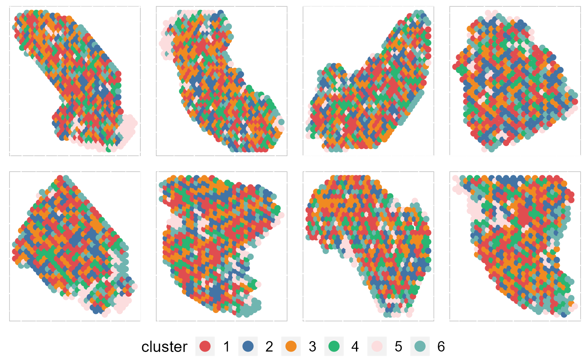 By setting combine =FALSE, this function will return a list of ggplot2 objects, thus user can revise each plot. In addtion, we can also plot some of data batches that are interested using the number ID or names of batch.
pList <- EachClusterSpaHeatMap(SRTProj, cols = cols_cluster, legend.position = "bottom", base_size = 12,
pt_size = 0.5, layout.dim = c(2, 4), nrow.legend = 1, combine = FALSE)
EachClusterSpaHeatMap(SRTProj, batch = 1:4, title_name = "PRECAST: ", cols = cols_cluster, legend.position = "right",
base_size = 12, pt_size = 2, layout.dim = c(2, 2))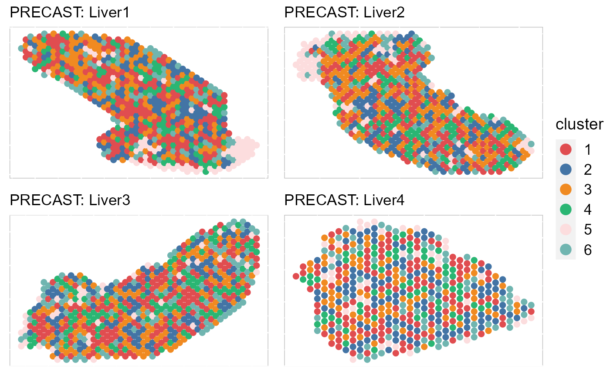
EachClusterSpaHeatMap(SRTProj, batch = c("Liver1", "Liver2", "Liver4", "Liver6"), title_name = "PRECAST: ",
cols = cols_cluster, legend.position = "right", base_size = 12, pt_size = 2, layout.dim = c(2,
2))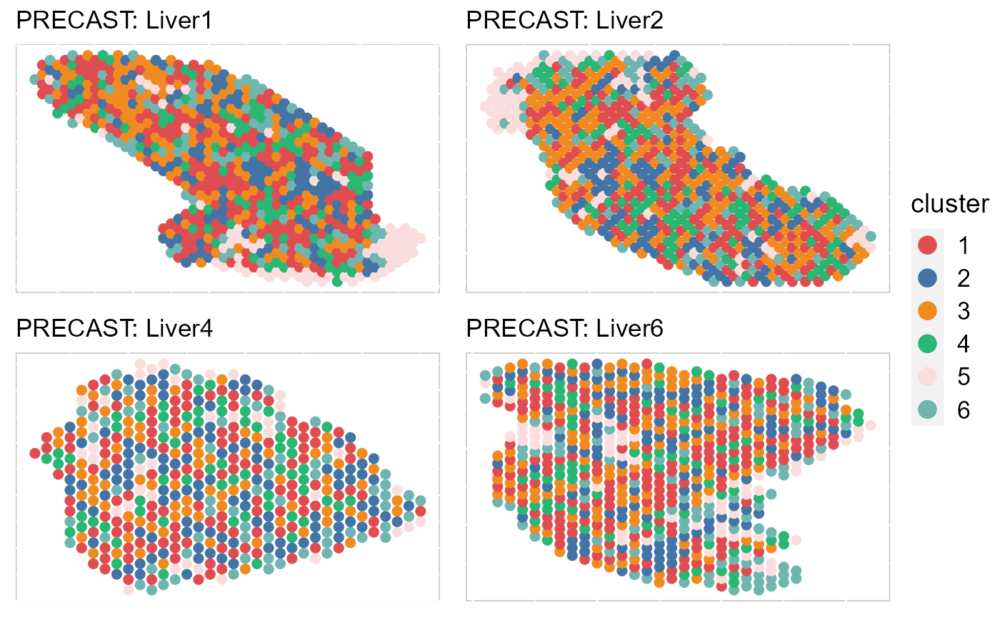
Next, we summarized the inferred embeddings for biological effects between spatial domain types (the slot reductions) using three components from either tSNE or UMAP and visualized the resulting tSNE/UMAP components with red/green/blue (RGB) colors in the RGB plot.
The resulting RGB plots from PRECAST showed the laminar organization of the human cerebral cortex, and PRECAST provided smooth transitions across neighboring spots and spatial domains.
SRTProj <- AddTSNE(SRTProj, n_comp = 3, reduction = "aligned.PRECAST")
p_tsne3 <- EachRGBSpaHeatMap(SRTProj, plot_type = "tSNE", pt_size = 1, title_name = "", layout.dim = c(2,
4))
p_tsne3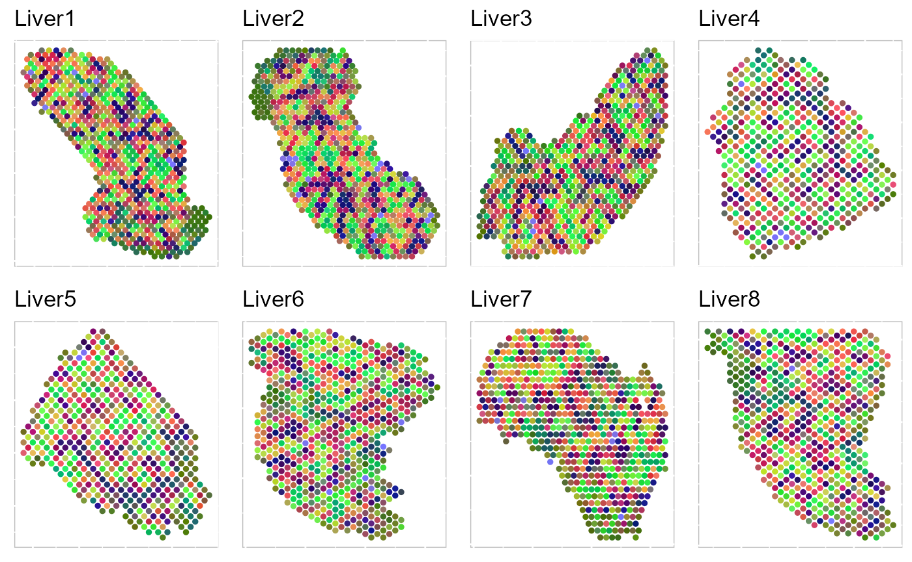 To run UMAP in SRTpipeline we use the AddUMAP() function. Frist, we evaluate the two-dimensional UMAPs.
SRTProj <- AddUMAP(SRTProj, n_comp = 2, reduction = "aligned.PRECAST")
p_umap2_cluster <- EmbedPlot(SRTProj, item = "cluster", plotEmbeddings = "UMAP", cols = cols_cluster,
legend.position = "bottom")
p_umap2_batch <- EmbedPlot(SRTProj, item = "batch", plotEmbeddings = "UMAP", cols = cols_batch,
legend.position = "bottom")
drawFigs(list(p_umap2_cluster, p_umap2_batch), layout.dim = c(1, 2), legend.position = "bottom")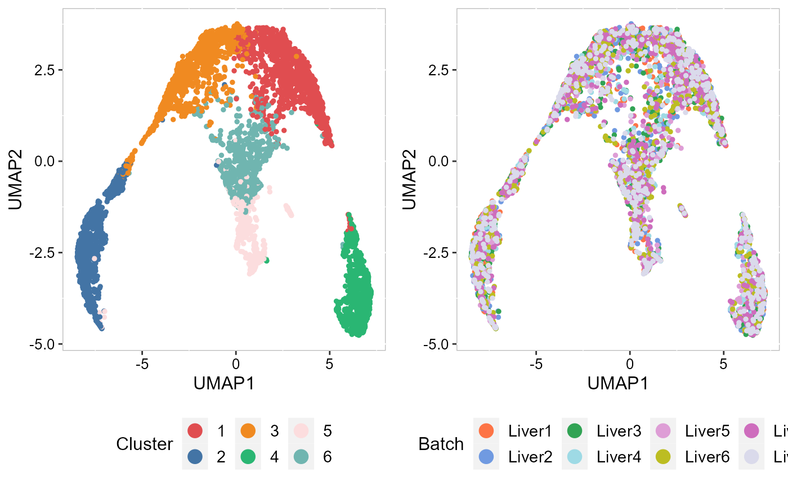 Then, we evaluate the three-dimensional UMAPs.
SRTProj <- AddUMAP(SRTProj, n_comp = 3, reduction = "aligned.PRECAST")
p_umap3 <- EachRGBSpaHeatMap(SRTProj, plot_type = "UMAP", layout.dim = c(2, 4), pt_size = 1.2, title_name = "UMAP: ")
p_umap3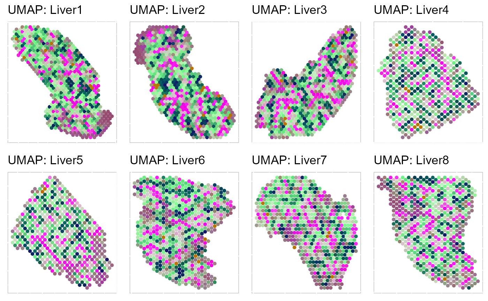
To save the plot, we can use write_fig() function.
write_fig(p_umap3, filename = "PRECAST_p_umap3.png", width = 14, height = 11)Moreover, we can visualize the microenvironment effects on the spatial coordinates. Then, we evaluate the three-dimensional UMAPs based on microEnv.PRECAST.
# save the previous calculated UMAP3
umap3_cluster <- SRTProj@plotEmbeddings$UMAP3
SRTProj <- AddUMAP(SRTProj, n_comp = 3, reduction = "microEnv.PRECAST")
p_umap3_micro <- EachRGBSpaHeatMap(SRTProj, plot_type = "UMAP", layout.dim = c(2, 4), pt_size = 1.2,
title_name = "mircoEnv: ")
p_umap3_micro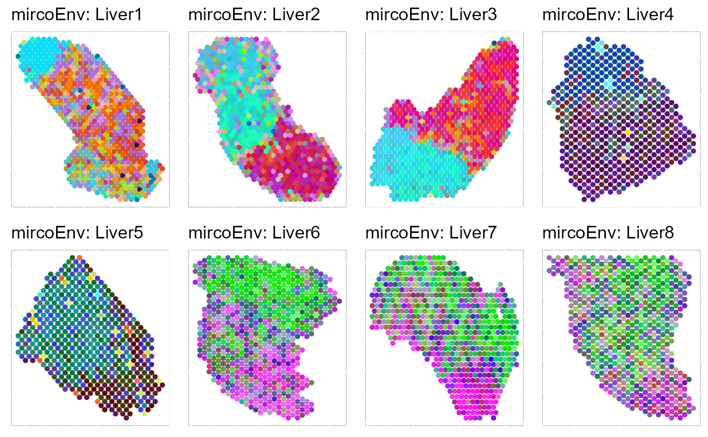
We plotted the heatmap of Pearson’s correlation coefcients of the estimated embeddings among the detected domains shows the good separation of the estimated embeddings across domains and the correlations between deeper layers were high, e.g., there were high correlations between domain 2 and 3, while correlations among the separated layers were low, i.e., domain 1 and 4.
p_cc <- CCHeatMap(SRTProj, reduction = "aligned.PRECAST", grp_color = cols_cluster)
p_cc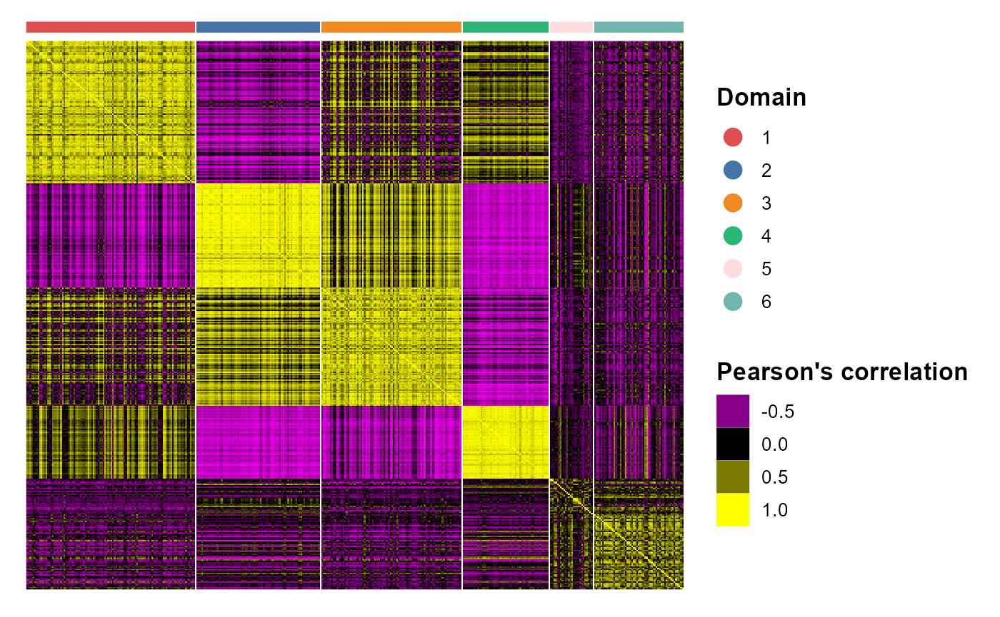 After adding the quantities for data visualization, the SRTProject object will have more information in the downstream analyses information. Now, we print this SRTProject object to check it. We observed two components added in the slot plotEmbeddings (Embeddings for plotting): tSNE, tSNE3, UMAP and UMAP3.
SRTProj## class: SRTProject
## outputPath: F:\Research paper\IntegrateDRcluster\AnalysisCode\SRTpipeline\vignettes\Liver8_PRECAST
## h5filePath: F:\Research paper\IntegrateDRcluster\AnalysisCode\SRTpipeline\vignettes\Liver8_PRECAST/Liver8_PRECAST.h5
## ---------Datasets basic information-----------------
## samples(8): Liver1 Liver2 ... Liver7 Liver8
## sampleColData names(3): species tissues NumOfSpots
## cellMetaData names(13): orig.ident nCount_RNA ... sample_id batch
## numberOfSpots(8): 675 684 ... 629 590
## ---------Downstream analyses information-----------------
## Variable features: 2000
## Low-dimensional embeddings(2): microEnv.PRECAST aligned.PRECAST
## Inferred cluster labels: Yes
## Embedding for plotting(4): tSNE tSNE3 UMAP UMAP3After obtain the spatial cluster labels using a clustering model, we can perform differentially expression analysis.
speInt <- getIntegratedData(SRTProj, Method = "PRECAST", species = "Mouse")We perform differential expression analysis for all clusters by using FindAllMarkers() function, then the DE genes’ information is saved in a data.frame object dat_degs.
dat_degs <- FindAllDEGs(speInt)
dat_degs## DataFrame with 139 rows and 7 columns
## p_val avg_log2FC pct.1 pct.2 p_val_adj cluster
## <numeric> <numeric> <numeric> <numeric> <numeric> <factor>
## Cyp2f2 2.13375e-133 -0.276666 0.974 0.976 4.26750e-130 1
## Cyp3a44 2.63076e-67 0.301031 0.904 0.778 5.26152e-64 1
## Sds 3.59100e-65 -0.385776 0.790 0.833 7.18200e-62 1
## Ctsc 3.18499e-58 -0.260690 0.843 0.884 6.36998e-55 1
## Etnppl 1.33155e-35 -0.266964 0.702 0.777 2.66311e-32 1
## ... ... ... ... ... ... ...
## Crip1 2.05320e-11 0.274878 0.669 0.565 4.10640e-08 5
## Tagln 6.91489e-08 0.279612 0.611 0.530 1.38298e-04 5
## Ahnak 2.50204e-06 0.295966 0.636 0.590 5.00407e-03 5
## H2-Ab1 2.97704e-06 0.252383 0.646 0.587 5.95408e-03 5
## Rsad2 1.48015e-03 0.276033 0.604 0.538 1.00000e+00 5
## gene
## <character>
## Cyp2f2 Cyp2f2
## Cyp3a44 Cyp3a44
## Sds Sds
## Ctsc Ctsc
## Etnppl Etnppl
## ... ...
## Crip1 Crip1
## Tagln Tagln
## Ahnak Ahnak
## H2-Ab1 H2-Ab1
## Rsad2 Rsad2We identify the significant DE genes by two criteria: (a) adjustd p-value less than 0.01 and (b) average log fold change greater than 0.4.
degs_sig <- subset(dat_degs, p_val_adj < 0.01 & avg_log2FC > 0.15)
degs_sig## DataFrame with 76 rows and 7 columns
## p_val avg_log2FC pct.1 pct.2 p_val_adj cluster
## <numeric> <numeric> <numeric> <numeric> <numeric> <factor>
## Cyp3a44 2.63076e-67 0.301031 0.904 0.778 5.26152e-64 1
## Cyp2f2.1 1.30108e-247 0.396082 1.000 0.970 2.60215e-244 2
## Sds.1 7.34988e-225 0.659291 0.976 0.790 1.46998e-221 2
## Hal 2.88488e-216 0.434640 0.996 0.928 5.76976e-213 2
## Ctsc.1 7.87168e-190 0.496634 0.990 0.849 1.57434e-186 2
## ... ... ... ... ... ... ...
## H2-Eb1 1.77301e-12 0.297547 0.667 0.571 3.54602e-09 5
## Crip1 2.05320e-11 0.274878 0.669 0.565 4.10640e-08 5
## Tagln 6.91489e-08 0.279612 0.611 0.530 1.38298e-04 5
## Ahnak 2.50204e-06 0.295966 0.636 0.590 5.00407e-03 5
## H2-Ab1 2.97704e-06 0.252383 0.646 0.587 5.95408e-03 5
## gene
## <character>
## Cyp3a44 Cyp3a44
## Cyp2f2.1 Cyp2f2
## Sds.1 Sds
## Hal Hal
## Ctsc.1 Ctsc
## ... ...
## H2-Eb1 H2-Eb1
## Crip1 Crip1
## Tagln Tagln
## Ahnak Ahnak
## H2-Ab1 H2-Ab1In the following, we perform gene set enrichment analysis for the DE genes of each Domain identified by DR-SC model using R package gprofiler2.
library(gprofiler2)
termList <- list()
for (k in 1:6) {
# k <- 1
if (sum(degs_sig$cluster == k) > 0) {
cat("k = ", k, "\n")
dat_degs_sub <- subset(degs_sig, cluster == k)
que1 <- dat_degs_sub$gene
gostres <- gost(query = que1, organism = "hsapiens", correction_method = "fdr")
termList[[k]] <- gostres
}
}## k = 1
## k = 2
## k = 4
## k = 5
head(termList[[1]]$result)## NULLTo understand the functions of the identified spatial domains by DR-SC model, we compare the top significant biological process (BP) pathways in GO database for the DE genes from Domain 1 and 2. Here, we only show to visualize the significant BP pathways and users can explore the other databases such as KEGG and HPA.
## Most commonly used databases
source_set <- c("GO:BP", "GO:CC", "GO:MF", "KEGG", "HPA")
cols <- c("steelblue3", "goldenrod", "brown3", "#f98866", "#CE6DBD")
## Here, we show GO:BP
source1 <- "GO:BP"
ss <- which(source_set == source1)
ntop = 5
names(cols) <- source_set
pList_enrich <- list()
for (ii in 1:5) {
## ii <- 5
message("ii=", ii)
gostres2 <- termList[[ii]]
if (!is.null(gostres2)) {
dat1 <- subset(gostres2$result, term_size < 500)
dat1 <- get_top_pathway(dat1, ntop = ntop, source_set = source1)
dat1 <- dat1[complete.cases(dat1), ]
dat1$nlog10P <- -log10(dat1$p_value)
pList_enrich[[ii]] <- barPlot_enrich(dat1[order(dat1$nlog10P), ], source = "source", "term_name",
"nlog10P", cols = cols[source_set[ss]], base_size = 14) + ylab("-log10(p-adj)") + xlab("Biological terms") +
ggtitle(paste0("Domain", ii))
}
}
drawFigs(pList_enrich[c(3, 4)], layout.dim = c(2, 1), common.legend = T, align = "hv")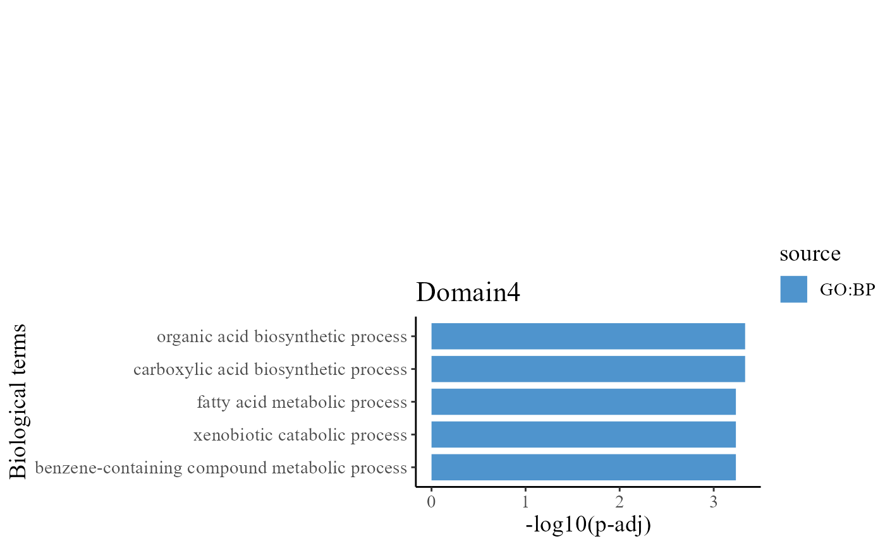
We take out the top DE genes for each cluster for visualization.
library(dplyr)
n <- 5
dat_degs %>%
as.data.frame %>%
group_by(cluster) %>%
top_n(n = n, wt = avg_log2FC) -> topGene
topGene## # A tibble: 22 x 7
## # Groups: cluster [5]
## p_val avg_log2FC pct.1 pct.2 p_val_adj cluster gene
## <dbl> <dbl> <dbl> <dbl> <dbl> <fct> <chr>
## 1 2.13e-133 -0.277 0.974 0.976 4.27e-130 1 Cyp2f2
## 2 2.63e- 67 0.301 0.904 0.778 5.26e- 64 1 Cyp3a44
## 3 3.18e- 58 -0.261 0.843 0.884 6.37e- 55 1 Ctsc
## 4 1.33e- 35 -0.267 0.702 0.777 2.66e- 32 1 Etnppl
## 5 1.69e- 35 -0.297 0.661 0.742 3.38e- 32 1 Aldh1b1
## 6 7.35e-225 0.659 0.976 0.79 1.47e-221 2 Sds
## 7 7.87e-190 0.497 0.99 0.849 1.57e-186 2 Ctsc
## 8 5.27e-178 0.627 0.925 0.679 1.05e-174 2 Aldh1b1
## 9 6.11e-106 0.463 0.906 0.727 1.22e-102 2 Etnppl
## 10 2.26e- 79 0.516 0.798 0.594 4.53e- 76 2 Spp1
## # ... with 12 more rowsWe visualize the DE genes for each cluster group by gene-by-cell heatmap using the GCHeatMap() function.
p1 <- GCHeatMap(speInt, features = topGene$gene, grp_color = cols_cluster, y_text_size = 12)
p1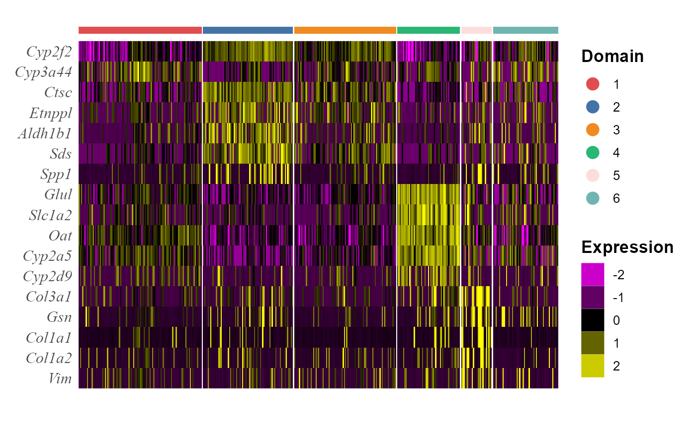
Next, we performed trajectory inference using the aligned embeddings and domain labels estimated by PRECAST model.
speInt <- AddTrajectory(speInt, reduction = "aligned.PRECAST")
p1 <- EmbedPlot(speInt, reduction = "aligned.PRECAST", colour_by = "PT")
p2 <- EmbedPlot(speInt, reduction = "tSNE", colour_by = "PT")
drawFigs(list(p1, p2), layout.dim = c(1, 2), common.legend = TRUE, legend.position = "right")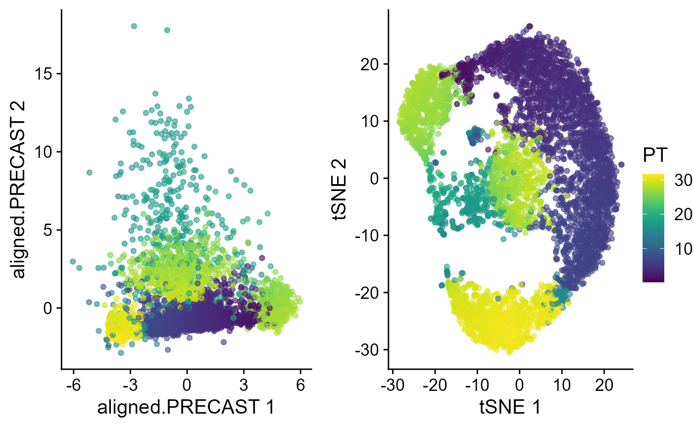
Visualize the inferred pseudotime on the spatial coordinates for each data batch.
p_spa <- EachEmbedPlot(speInt, reduction = "Coord", colour_by = "PT", layout.dim = c(2, 4))
p_spa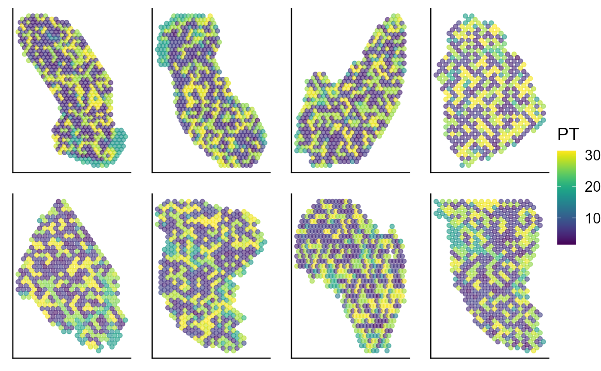
# save(SRTProj, file=paste0(SRTProj@projectMetadata$outputPath,'/SRTProj.rds'))
# load('F:/Research
# paper/IntegrateDRcluster/AnalysisCode/SRTpipeline/vignettes/Liver8/SRTProj.rds')Session Info
## R version 4.1.2 (2021-11-01)
## Platform: x86_64-w64-mingw32/x64 (64-bit)
## Running under: Windows 10 x64 (build 22621)
##
## Matrix products: default
##
## locale:
## [1] LC_COLLATE=Chinese (Simplified)_China.936
## [2] LC_CTYPE=Chinese (Simplified)_China.936
## [3] LC_MONETARY=Chinese (Simplified)_China.936
## [4] LC_NUMERIC=C
## [5] LC_TIME=Chinese (Simplified)_China.936
##
## attached base packages:
## [1] stats4 stats graphics grDevices utils datasets methods
## [8] base
##
## other attached packages:
## [1] scater_1.25.1 scuttle_1.4.0
## [3] slingshot_2.2.0 TrajectoryUtils_1.2.0
## [5] princurve_2.1.6 gprofiler2_0.2.1
## [7] bigalgebra_1.1.0 bigmemory_4.5.36
## [9] SpatialExperiment_1.4.0 SingleCellExperiment_1.16.0
## [11] SummarizedExperiment_1.24.0 Biobase_2.54.0
## [13] GenomicRanges_1.46.1 GenomeInfoDb_1.30.1
## [15] IRanges_2.28.0 MatrixGenerics_1.6.0
## [17] matrixStats_0.62.0 dplyr_1.0.9
## [19] ggplot2_3.3.6 colorspace_2.0-3
## [21] Matrix_1.4-0 hdf5r_1.3.5
## [23] ff_4.0.7 bit_4.0.4
## [25] S4Vectors_0.32.3 BiocGenerics_0.40.0
## [27] rhdf5_2.38.0 sp_1.5-0
## [29] SeuratObject_4.1.0 Seurat_4.1.1
## [31] SRTpipeline_0.1.1
##
## loaded via a namespace (and not attached):
## [1] scattermore_0.8 ggthemes_4.2.4
## [3] R.methodsS3_1.8.1 GiRaF_1.0.1
## [5] ragg_1.2.2 tidyr_1.2.0
## [7] bit64_4.0.5 knitr_1.37
## [9] irlba_2.3.5 DelayedArray_0.20.0
## [11] R.utils_2.11.0 data.table_1.14.2
## [13] rpart_4.1.16 RCurl_1.98-1.6
## [15] generics_0.1.2 ScaledMatrix_1.2.0
## [17] cowplot_1.1.1 RANN_2.6.1
## [19] future_1.26.1 spatstat.data_3.0-0
## [21] httpuv_1.6.5 assertthat_0.2.1
## [23] viridis_0.6.2 xfun_0.29
## [25] jquerylib_0.1.4 evaluate_0.15
## [27] promises_1.2.0.1 fansi_1.0.3
## [29] igraph_1.3.5 DBI_1.1.2
## [31] htmlwidgets_1.5.4 spatstat.geom_2.4-0
## [33] purrr_0.3.4 ellipsis_0.3.2
## [35] RSpectra_0.16-1 ggpubr_0.4.0
## [37] backports_1.4.1 DR.SC_3.1
## [39] deldir_1.0-6 sparseMatrixStats_1.6.0
## [41] vctrs_0.4.1 ROCR_1.0-11
## [43] abind_1.4-5 cachem_1.0.6
## [45] withr_2.5.0 PRECAST_1.4
## [47] progressr_0.10.1 sctransform_0.3.3
## [49] mclust_5.4.10 goftest_1.2-3
## [51] cluster_2.1.2 lazyeval_0.2.2
## [53] crayon_1.5.1 edgeR_3.36.0
## [55] pkgconfig_2.0.3 labeling_0.4.2
## [57] nlme_3.1-155 vipor_0.4.5
## [59] rlang_1.0.2 globals_0.15.0
## [61] lifecycle_1.0.1 miniUI_0.1.1.1
## [63] bigmemory.sri_0.1.3 rsvd_1.0.5
## [65] rprojroot_2.0.3 polyclip_1.10-0
## [67] lmtest_0.9-40 carData_3.0-5
## [69] Rhdf5lib_1.16.0 zoo_1.8-10
## [71] beeswarm_0.4.0 ggridges_0.5.3
## [73] rjson_0.2.21 png_0.1-7
## [75] viridisLite_0.4.0 bitops_1.0-7
## [77] R.oo_1.24.0 KernSmooth_2.23-20
## [79] rhdf5filters_1.6.0 DelayedMatrixStats_1.16.0
## [81] stringr_1.4.0 parallelly_1.32.0
## [83] spatstat.random_2.2-0 rstatix_0.7.0
## [85] ggsignif_0.6.3 beachmat_2.10.0
## [87] scales_1.2.0 memoise_2.0.1
## [89] magrittr_2.0.3 plyr_1.8.7
## [91] ica_1.0-2 zlibbioc_1.40.0
## [93] compiler_4.1.2 dqrng_0.3.0
## [95] RColorBrewer_1.1-3 fitdistrplus_1.1-8
## [97] cli_3.2.0 XVector_0.34.0
## [99] listenv_0.8.0 patchwork_1.1.1
## [101] pbapply_1.5-0 formatR_1.11
## [103] MASS_7.3-55 mgcv_1.8-39
## [105] tidyselect_1.1.2 stringi_1.7.6
## [107] textshaping_0.3.6 highr_0.9
## [109] yaml_2.3.6 BiocSingular_1.10.0
## [111] locfit_1.5-9.4 ggrepel_0.9.1
## [113] grid_4.1.2 sass_0.4.1
## [115] tools_4.1.2 future.apply_1.9.0
## [117] parallel_4.1.2 rstudioapi_0.13
## [119] gridExtra_2.3 farver_2.1.0
## [121] Rtsne_0.16 DropletUtils_1.14.2
## [123] digest_0.6.29 rgeos_0.5-9
## [125] shiny_1.7.1 Rcpp_1.0.10
## [127] car_3.0-12 broom_0.7.12
## [129] later_1.3.0 RcppAnnoy_0.0.19
## [131] httr_1.4.3 fs_1.5.2
## [133] tensor_1.5 reticulate_1.25
## [135] splines_4.1.2 uwot_0.1.11
## [137] spatstat.utils_3.0-1 pkgdown_2.0.6
## [139] plotly_4.10.0 systemfonts_1.0.4
## [141] xtable_1.8-4 jsonlite_1.8.0
## [143] R6_2.5.1 pillar_1.7.0
## [145] htmltools_0.5.2 mime_0.12
## [147] glue_1.6.2 fastmap_1.1.0
## [149] BiocParallel_1.28.3 BiocNeighbors_1.12.0
## [151] codetools_0.2-18 utf8_1.2.2
## [153] lattice_0.20-45 bslib_0.3.1
## [155] spatstat.sparse_2.1-1 tibble_3.1.7
## [157] ggbeeswarm_0.6.0 leiden_0.4.2
## [159] gtools_3.9.2.2 magick_2.7.3
## [161] survival_3.2-13 limma_3.50.1
## [163] CompQuadForm_1.4.3 rmarkdown_2.11
## [165] desc_1.4.0 munsell_0.5.0
## [167] GenomeInfoDbData_1.2.7 HDF5Array_1.22.1
## [169] reshape2_1.4.4 gtable_0.3.0
## [171] spatstat.core_2.4-4